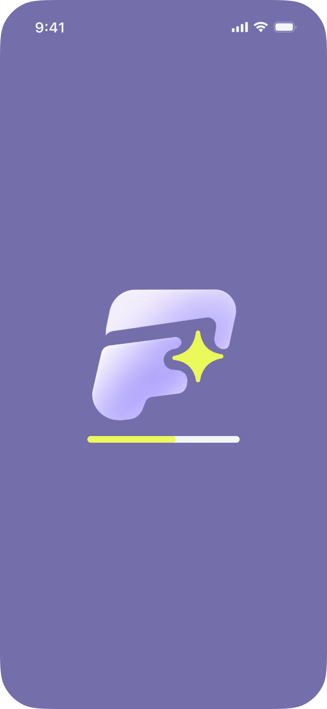
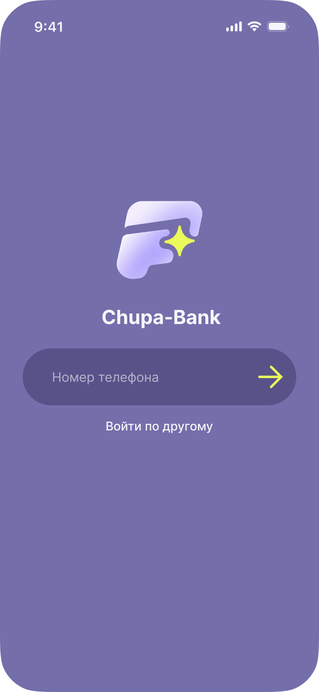
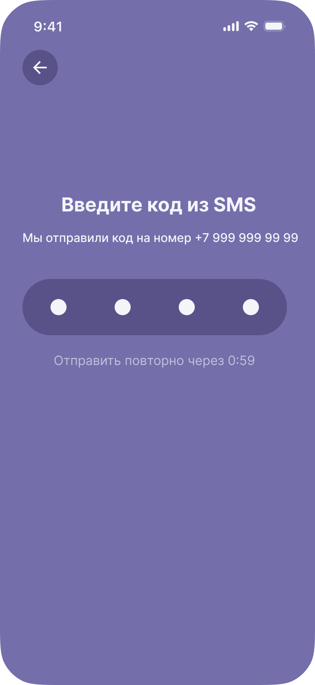
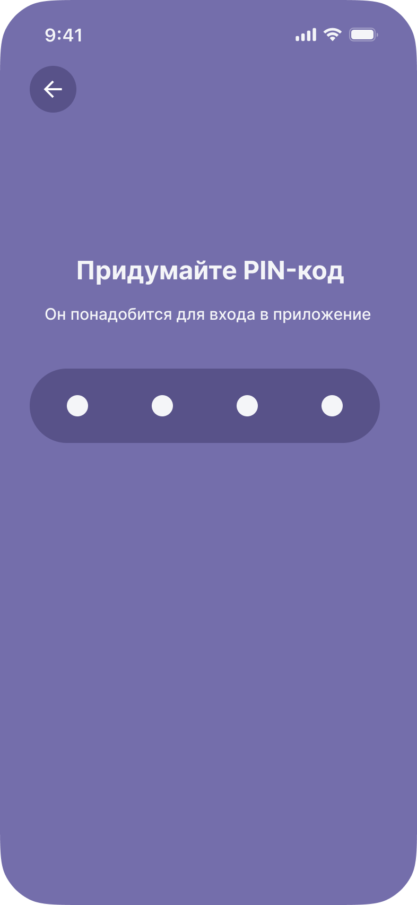
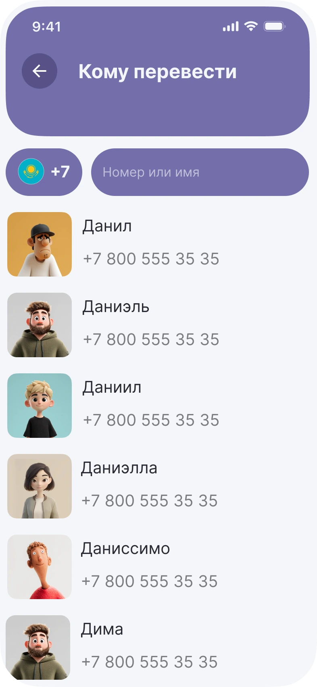
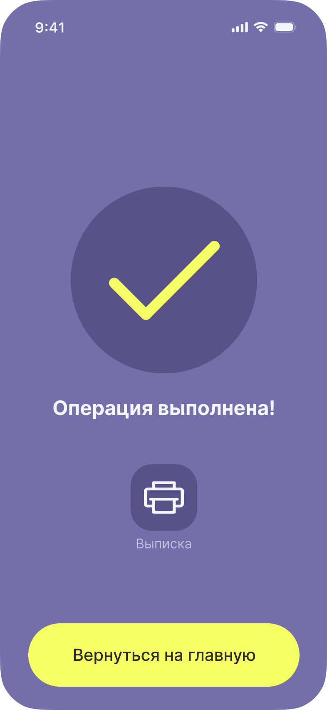
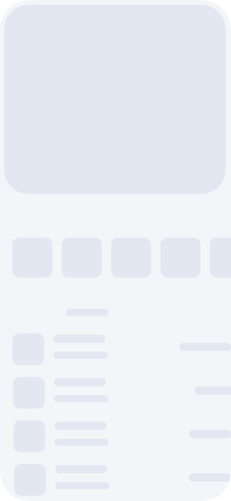
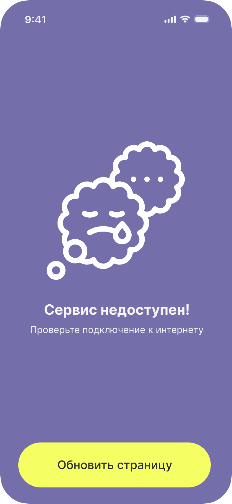
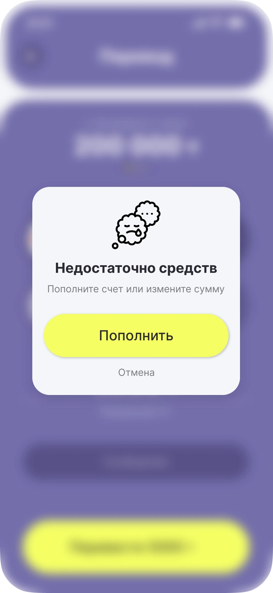

01Загрузка

Экран запуска с логотипом и индикатором загрузки.
Перевод по номеру в три экрана и состояния, в которых пользователь не теряется.

Чтобы перевести деньги, в популярных банковских приложениях нужно пройти 5–7 экранов, а по пути предлагают кредит и страховку. Цель: приложение, где перевод, оплата и статистика доступны быстро и без раздражения.
Отдельная задача — продумать не только идеальный сценарий, но и тупики: нет интернета, не хватает средств, данные грузятся долго.
Восемь шагов: регистрация, главная и перевод по номеру. Каждый экран появляется по мере прокрутки.

Экран запуска с логотипом и индикатором загрузки.

Вход по номеру телефона: одно поле и стрелка вместо кнопки; запасной вариант «Войти по другому».

Код из четырёх цифр, таймер повторной отправки 0:59 и кнопка назад.

Придумать четырёхзначный PIN для входа в приложение.
Баланс и три действия под рукой: пополнить, перевести, QR. Ниже избранные контакты и последние операции.

Поиск по номеру или имени, код +7 с флагом Казахстана и список контактов с аватарами.

Банки получателя подбираются по номеру; остаётся указать сумму и нажать кнопку с этой суммой.

Подтверждение операции, выписка и возврат на главную одной кнопкой.
Три ситуации, в которых что-то идёт не так: ожидание, сбой связи и нехватка средств. Веер собирает их в один набор. Наведи на экран, чтобы выделить пояснение.


